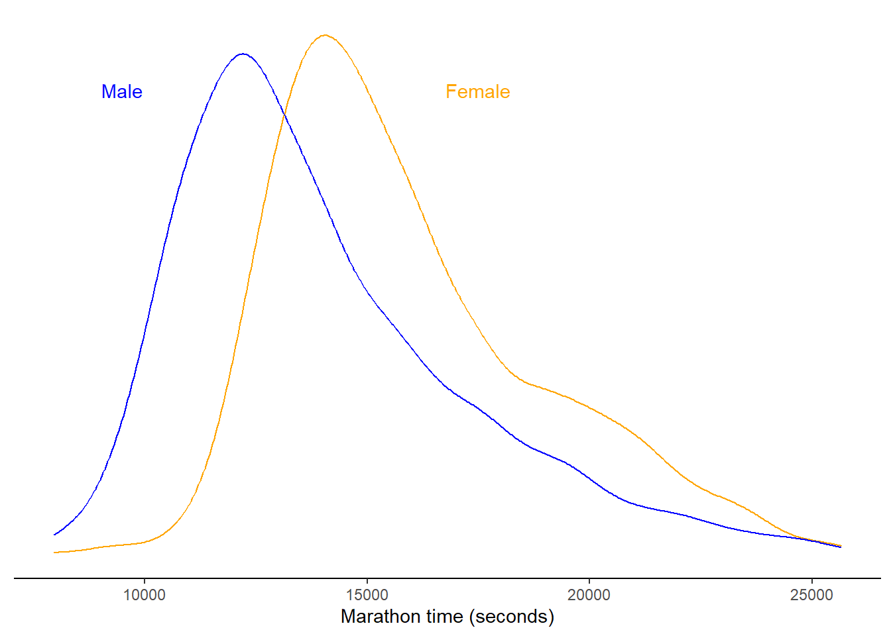
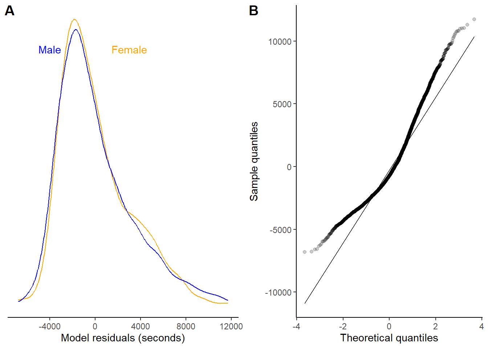
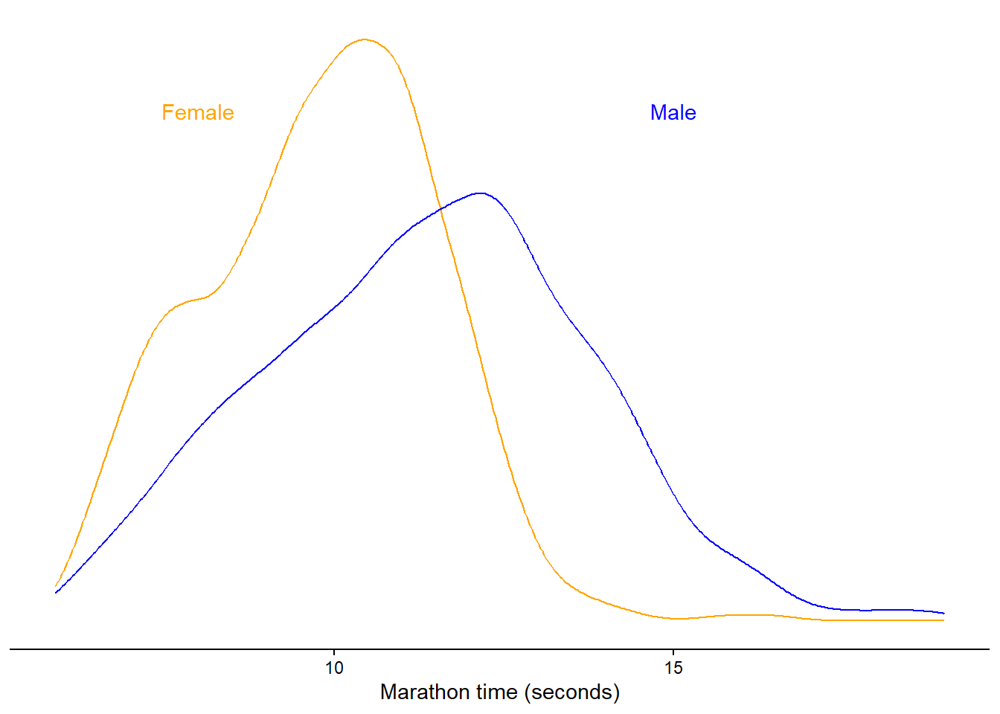
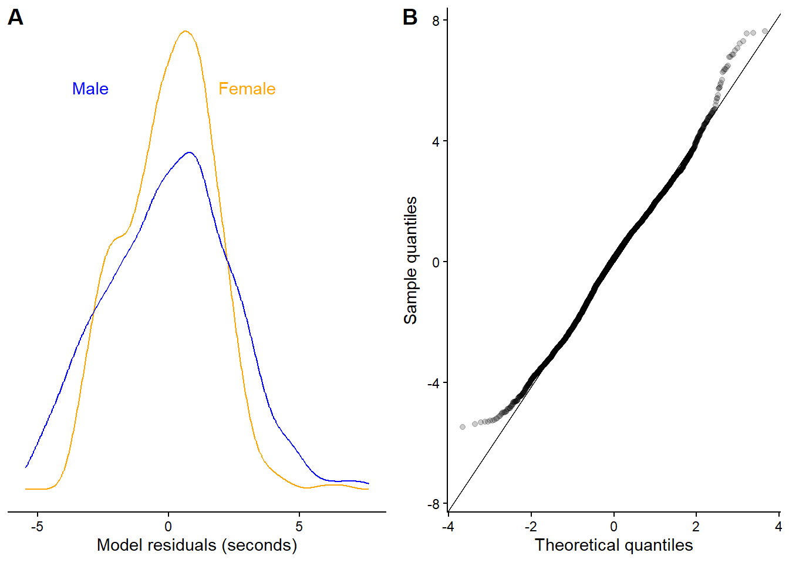
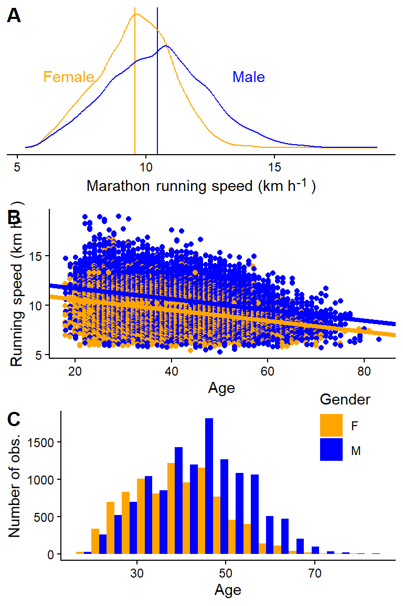
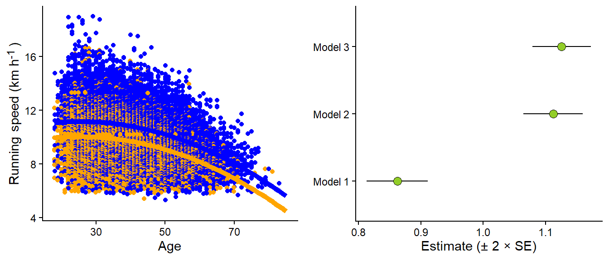

We have, up to now, used a single continuous predictor to model a dependent variable. In this chapter, we will see that the ordinary regression models can be modified and extended to model other relationships, e.g., between a categorical variable and a continuous outcome. This allows us to model, e.g., differences between groups. Additionally, by incorporating more than one independent variable into the model, we will be able to perform conditional comparisons. This means that a relationship between two variables can be examined after accounting for a third variable.
9.1 Linear models for comparisons between categories
Let’s say we have an outcome, y, that is normally distributed, but where the mean depends on a categorical variable. We may write this as
\[
\begin{align}
y_i &\sim \operatorname{Normal}(\mu_i, \sigma) \\
\mu &= \beta_0 + \beta_1x_i
\end{align}
\] Where \(x\) is a variable of zeros and ones. This variable is constructed from a category, let’s say 0 for females and 1 for males. The model, as defined above, will estimate an intercept and a slope. The intercept gives us the average (μ) when \(x = 0\), that is in the female group. When we “activate” the slope parameter by setting \(x = 1\) we get the difference between females and males, plus the average in the females, which together gives us the average in males. The raw data from the Boston marathon 2012, in ages 18-30 and females and males are plotted in Figure 9.1.
Code
library(tidyverse)library(ggtext)library(exscidata)dat <- exscidata::boston |>filter(year ==2012, age >=18& age <=30) dat |>ggplot(aes(seconds, color = gender)) +geom_density() +theme_classic() +theme(axis.text.y =element_blank(),axis.title.y =element_blank(), axis.line.y =element_blank(), axis.ticks.y =element_blank(), legend.position ="none") +labs(x ="Marathon time (seconds)") +annotate("text", x =c(9500,17500), y =c(0.00015, 0.00015), label =c("Male", "Female"), color =c("blue", "orange")) +scale_color_manual(values =c("orange", "blue"))

Figure 9.1: Raw Borston marathon (2012) times in females and males, 18-30 years of age.
We will use this data to fit the model. Before looking at the estimates, it is a good idea to evaluate if the model residual behave as we assume. Remember, we say that \(y \sim \operatorname{Normal}(\mu, \sigma)\), indicating that the variation around the conditional mean is normally distributed. The figure below (Figure 9.2), indicate that the residuals are not normally distributed, we can see this from the long tail in Figure 9.2 A and the corresponding QQ-plot in Figure 9.2 B.
Code
m1 <-lm(seconds ~ gender, data = dat)dat$resid <-resid(m1)p1 <- dat |>ggplot(aes(resid, color = gender)) +geom_density() +theme_classic() +theme(axis.text.y =element_blank(),axis.title.y =element_blank(), axis.line.y =element_blank(), axis.ticks.y =element_blank(), legend.position ="none") +labs(x ="Model residuals (seconds)") +annotate("text", x =c(-4000,3000), y =c(0.00015, 0.00015), label =c("Male", "Female"), color =c("blue", "orange")) +scale_color_manual(values =c("orange", "blue"))p2 <- dat |>ggplot(aes(sample = resid)) +geom_qq_line() +geom_qq(alpha =0.2) +theme_classic() +labs(x ="Theoretical quantiles", y ="Sample quantiles")cowplot::plot_grid(p1, p2, labels =c("A", "B"))

Figure 9.2: Residuals from a model of raw Borston marathon (2012) times in females and males, 18-30 years of age. The
Marathon times are naturally right-skewed, there is a physical limit to the maximum speed during a marathon due to our limited metabolism and biomechanical characteristics. On the other side there is no real limit to the lowest possible speed and thus the time it could take to complete the race. We can get a better outcome variable by modelling running speed instead (km h-1). It turns out that transforming time-to-complete to running speeds improves the distribution of our outcome.
Code
dat <- dat |>mutate(speed =42/ ((seconds/60)/60))dat |>ggplot(aes(speed, color = gender)) +geom_density() +theme_classic() +theme(axis.text.y =element_blank(),axis.title.y =element_blank(), axis.line.y =element_blank(), axis.ticks.y =element_blank(), legend.position ="none") +labs(x ="Marathon time (seconds)") +annotate("text", x =c(15,8), y =c(0.2, 0.2), label =c("Male", "Female"), color =c("blue", "orange")) +scale_color_manual(values =c("orange", "blue"))

Figure 9.3: Residuals from a model of raw Borston marathon (2012) times in females and males, 18-30 years of age. The
We fit our model to the running speeds and the residuals look much better, although not perfect. We will accept this situation now as a good-enough model for our purposes.
Code
m2 <-lm(speed ~ gender, data = dat)dat$resid <-resid(m2)p1 <- dat |>ggplot(aes(resid, color = gender)) +geom_density() +theme_classic() +theme(axis.text.y =element_blank(),axis.title.y =element_blank(), axis.line.y =element_blank(), axis.ticks.y =element_blank(), legend.position ="none") +labs(x ="Model residuals (seconds)") +annotate("text", x =c(-3, 3), y =c(0.2, 0.2), label =c("Male", "Female"), color =c("blue", "orange")) +scale_color_manual(values =c("orange", "blue"))p2 <- dat |>ggplot(aes(sample = resid)) +geom_qq_line() +geom_qq(alpha =0.2) +theme_classic() +labs(x ="Theoretical quantiles", y ="Sample quantiles")cowplot::plot_grid(p1, p2, labels =c("A", "B"))b1 <-coef(summary(m2))[2,1]error <-coef(summary(m2))[2,2]

Figure 9.4: Residuals from a model of raw Borston marathon (2012) running speeds in females and males, 18-30 years of age. The
We are ready to analyze the parameter estimates. In the table (Table 9.1) we can see that the estimated average speed in females is 9.82 km h-1. The difference between Females and Males is 1.55 km h-1, males are faster than females. We are pretty certain about the estimates as the standard errors for the estimates are small. We can approximate a confidence interval for the difference by \(\operatorname{Estimate} \pm 2\times \operatorname{SE}\). In this case it will give us a approximate 95% CI: [1.42, 1.68].1
1 This is an approximation! Using the confint function in R (or equivalent functions in JASP) we will get more precise estimates. Often, a manual approximation helps us understand the models implication. Here we have an estimates that is relaibly different from 0.
Table 9.1: Estimates from a model that models running speed as a predicted by gender (Male vs. Female)
Parameter
Estimate
SE
Intercept
9.82
0.04
Gender (Male - Female)
1.55
0.06
9.1.1 What about t-tests?
t-tests are designed to compare means. A question you might want to answer using a t-test is how unlikely the result from your test is if there were no actual differences between values from two groups (independent t-test), or two samples from the same individuals (paired sample t-test), or when comparing a group to a specific value (one-sample t-test). The test is designed to test the hypothesis of no difference between groups. One outcome of the test is the p-value, which can be used to determine if the result should be regarded as unlikely under the null hypothesis. This will be covered in more detail later, when we talk about statistical inference.
Another outcome of the t-test is the confidence interval for the difference between groups. This is equivalent to the confidence interval we approximated above in our regression model. The equivalence of the two methods is not a coincidence; in fact, they basically rely on the same model.
We can run a t-test in R using the following syntax:
m3 <-t.test(speed ~ gender, data = dat, var.equal =TRUE)
Notice the argument var.equal = TRUE, this indicates that we are willing to consider the variation in the two groups as equal. The R code saves the test as an object. From this object, we can retrieve all the necessary components used to draw conclusions from the test (see the code block below). Focusing on the mean difference, the model estimates get 1.55 km h-1, with a 95% confidence interval for the mean starting at 1.42, going to 1.68 (a more formal way to present the 95% confidence interval would be: 95% CI: [1.42, 1.68]).
Components of a t-test in R
# Run the code in your own session to reproduce the results.# First we load the data again.dat <- exscidata::boston |>filter(year ==2012, age >=18& age <=30) |>mutate(speed =42/ ((seconds/60)/60)) |># The t-test orders groups differently from the regression model, # to get comparable results we need to reverse the grouping # variable. mutate(gender =factor(gender, levels =c("M", "F")))# We store the test in an object called "m3"m3 <-t.test(speed ~ gender, data = dat, var.equal =TRUE)# The test can be printed in the console, this will provide us # with a summary.print(m3)# Different components of the test can be retreived using the $ operator.# The estimated group meansm3$estimate# To calculate the mean differencem3$estimate[1] - m3$estimate[2]# The standard error of the mean differencem3$stderr# Confidence interval for the difference in meansm3$conf.int# The p-valuem3$p.value
9.1.2 More t-test examples
We can perform t-tests on data from the cyclingstudy data set. In the R code below, we will select the variable squat jump and filter it from two time-points. pivot_wider is used to put squat jump performance from the two time-points in separate columns. A change score is then calculated.
library(tidyverse)library(exscidata)cyc_select <- cyclingstudy |># select a subset of variables, squat jump max is the outcome of interest.select(subject, timepoint, sj.max) |># time-points of interestfilter(timepoint %in%c("pre", "meso3")) |># spread the data based on time-pointspivot_wider(names_from = timepoint, values_from = sj.max) |># create a change scoremutate(change = meso3 - pre)
The data above may be used to perform the paired sample t-test or the one-sample t-test. These are basically equivalent. In the first case, we use both vectors of numbers and test if the difference between them is different from zero. In the other case, we calculate the differences first and then test if the mean change-score is different from zero. In the paired sample t-test, the argument paired = TRUE must be added to the t.testcall to make sure you do a paired comparison. In the one-sample case, we have to set the mean we want to compare to, in this case, zero (mu = 0).
paired <-t.test(cyc_select$meso3, cyc_select$pre, paired =TRUE)one_sample <-t.test(cyc_select$change, mu =0)
These tests are equal, as we can see from the comparison below. They are also equivalent to a linear model where we model the mean of the change score. When fitting the change variable without any predictors, we estimate a single parameter in our model, the intercept. The intercept coefficient can be used to test against the same null hypothesis (change not different from zero); the same results will appear. We can add all results to the same table (Table 9.2).
Table 9.2: Comparing a paired sample t-test, one sample t-testa and a linear regression model
Test
t-value
p-value
Estimate
Lower CI
Upper CI
Standard error
Paired sample t-test
−1.788
0.091
−0.891
−1.938
0.156
0.498
One sample t-test
−1.788
0.091
−0.891
−1.938
0.156
0.498
Linear model
−1.788
0.091
−0.891
−1.938
0.156
0.498
We can also test if there is a true difference in VO2.max change between group INCRand DECR using a t-test.
cyc_select <- cyclingstudy |># Select appropriate variables and filter time-pointsselect(subject,group, timepoint, VO2.max) |>filter(timepoint %in%c("pre", "meso3"), group !="MIX") |># make the data set wider and calculate a change score (%-change).pivot_wider(names_from = timepoint, values_from = VO2.max) |>mutate(change = meso3-pre) # Perform a two-sample t-testt.test(change ~ group, data = cyc_select, var.equal =TRUE)
Two Sample t-test
data: change by group
t = -1.0703, df = 11, p-value = 0.3074
alternative hypothesis: true difference in means between group DECR and group INCR is not equal to 0
95 percent confidence interval:
-503.6842 174.0833
sample estimates:
mean in group DECR mean in group INCR
208.2119 373.0123
Above we use the formula method to specify the t-test (see ?t.test). var.equal = TRUE tells the t.test function to assume equal variances between groups.
The same result will appear when we fit the data to a linear model. The summary function is a generic function, meaning that many type of R objects has summary methods. From summary, we get a regression table of estimates. The first row is the intercept, which we can interpret as the mean change in one of the groups (DECR). This row has all the statistics associated with this estimate, including the average (Estimate), standard error, t-value, and a p-value.
The second row represents the difference between groups. The INCR group has a change score that is 164.8 units larger than the DECR group. The associated statistics can be used to assess whether this difference is large enough to be considered surprisingly large if the null hypothesis is actually true.
lin_mod <-lm(change ~ group, data = cyc_select)summary(lin_mod)
Call:
lm(formula = change ~ group, data = cyc_select)
Residuals:
Min 1Q Median 3Q Max
-672.01 -141.94 18.76 155.99 409.00
Coefficients:
Estimate Std. Error t value Pr(>|t|)
(Intercept) 208.2 113.0 1.843 0.0924 .
groupINCR 164.8 154.0 1.070 0.3074
---
Signif. codes: 0 '***' 0.001 '**' 0.01 '*' 0.05 '.' 0.1 ' ' 1
Residual standard error: 276.7 on 11 degrees of freedom
(1 observation deleted due to missingness)
Multiple R-squared: 0.09433, Adjusted R-squared: 0.01199
F-statistic: 1.146 on 1 and 11 DF, p-value: 0.3074
9.1.3 Modelling variation
So far, we have defined our models assuming constant variation (\(y_i \sim \operatorname{Normal}(\mu_i,\sigma)\)), the \(\sigma\) of the assumed normal distribution does change. However, this assumption may not hold. Instead, we could rewrite our model to include different variations per group.
\[
\begin{align}
y_i &\sim \operatorname{Normal}(\mu_i, \sigma_g) \\
\mu_i &= \beta_0 + \beta_1x_{g[i]}
\end{align}
\] The \(\sigma_g\) indicates that σ depends on the group \(g\). The \(x_{g[i]}\) variable is the grouping variable in the linear model for the mean. It takes the value 0 when we have the reference group, and 1 when we have the other group.
Modelling the variation can be interesting in itself. However, this is commonly not the reason for including it in our models. Instead, we want to have well-calibrated standard errors for our estimates as these determine the test statistic, confidence intervals, and p-values. If we underestimate the variation between observations, we risk being more certain about estimates than we should, which increases the risk of making incorrect inferences in hypothesis tests. We will cover this in more detail later.
Using var.equal = TRUE in the unpaired t-test we assumed that the variation was similar in both groups. The alternative to the assumption of constant variation in R (and JASP) is the Welch two-sample t-test. This test is the default in R because assuming unequal variance between groups is safer for inference. The Welch two-sample t-test can be approximated using a linear model. However, we have to specify it in a slightly different framework using the gls() function from the nlme package. These two methods are not equivalent, but they both attempt to model the group-wise variation, as we specified in the model description above.
You are not required to master gls at this time. It however shows that the linear model framework is very flexible as it in this case also can be adjusted to take care of heteroscedasticity.
9.2 Dummy variables
The group variable we used in the code above introduces something new to the linear model: dummy variables. When we put a categorical variable in the lm command, R will code it as a dummy variable. This variable will be zero if the group corresponds to the first level of the categorical variable (coded as a factor variable), and it will be one if it is the second level.
In the simplest case (as above), we will get a linear model looking like this:
\[y_i = \beta_0 + \beta_1x_i\]
Where the \(x\) is the grouping variable and set to 0 when we have the reference group and 1 when we have the second level group. The coefficient \(\beta_1\) only kicks in if the group is 1. This also means that when group = 0, \(y\) corresponds to the intercept of the model. If group = 1 we have the intercept + the slope. The slope represents the difference between the intercept (group = 0) and group = 1.
If the grouping variable would have more groups more dummy-variables would have been added by R to create several comparisons between the reference group and compared levels of the variable.
9.3 Multiple regression
Contrary to the t-tests used above, the linear model can be extended by adding more variables (independent variables). In a situation where multiple independent variables are included in the model, we control for their relationship to the dependent variable when we evaluate the other variables.
In a previous example, we estimated the effect of gender (males vs. females) on running speeds in the Boston marathon. We did the comparison in a specific age group, presumably “controlling” for the effect of age on running speed by comparing two groups with similar ages. We could do better. Let’s include all data from the 2012 Boston Marathon, calculate the running speed, and estimate the mean difference between men and women. A first naive model will not take age into account. A second model will incorporate the effect of age on running speed, with the relationship being modeled as a straight line. This is our first attempt at a multiple regression model.
Code
# First we load the data again.dat <- exscidata::boston |>filter(year ==2012) |>mutate(speed =42/ ((seconds/60)/60)) m1 <-lm(speed ~ gender, data = dat)m2 <-lm(speed ~ gender + age, data = dat)p1 <- dat |>ggplot(aes(speed, color = gender)) +# Add model estimatesgeom_vline(xintercept =coef(m1)[1], color ="orange") +geom_vline(xintercept =coef(m1)[1] +coef(m1)[2], color ="blue") +geom_density() +theme_classic() +theme(axis.text.y =element_blank(),axis.title.y =element_blank(), axis.line.y =element_blank(), axis.ticks.y =element_blank(),axis.title.x =element_markdown(),legend.position ="none") +labs(x ="Marathon running speed (km h<sup>-1</sup>)") +annotate("text", x =c(14,7), y =c(0.15, 0.15), label =c("Male", "Female"), color =c("blue", "orange")) +scale_color_manual(values =c("orange", "blue"))p2 <- dat |>ggplot(aes(age, speed, color = gender)) +geom_point(position =position_dodge(width =0.25)) +theme_classic() +scale_color_manual(values =c("orange", "blue")) +theme(legend.position ="none") +geom_abline(intercept =coef(m2)[1], slope =coef(m2)[3], color ="orange", lty =1, linewidth =1.5) +geom_abline(intercept =coef(m2)[1] +coef(m2)[2], slope =coef(m2)[3], color ="blue", lty =1, linewidth =1.5) +labs(x ="Age", y ="Running speed (km h<sup>-1</sup>)") +theme(legend.position ="none", axis.title.y =element_markdown()) p3 <- dat |>ggplot(aes(age, fill = gender)) +geom_histogram(position =position_dodge(), bins =20) +theme_classic() +scale_fill_manual(values =c("orange", "blue")) +labs(fill ="Gender", x ="Age", y ="Number of obs.") +theme(legend.position ="inside", legend.position.inside =c(0.85, 0.9))cowplot::plot_grid(p1, p2, p3, ncol =1, labels =c("A", "B", "C"))

Figure 9.5: An univariate comparison of running speed in two gender groups (A). Running speed changes with age, by incorporating this in the model we compare males and females at a fixed age (B). This is important as the age distribution varies slightly between genders (C).
The first model finds the averages per gender regardless of the age distribution (Figure 9.5 A). In the second model, we estimate a mean difference between genders while simultaneously accounting for the relationship between age and running speed (Figure 9.5 B). The second model gives us the difference between the average male and female runner of a specific age. This comparison accounts for differences in age distributions between genders (Figure 9.5 C). However, it assumes a linear relationship between age and running speed.
Let’s add a curve-linear relationship between age and running speed (Figure 9.6 A). The resulting model adds an additional variable (\(age^2\)), and we get another parameter. We are still comparing men and women at a specific age. However, now the average running speed changes non-linearly with age. The resulting model (visualized in Figure 9.6) gives us a slightly different estimate of the effect of gender on running speeds compared to incorporating age a straight line, or when disregarding age (Figure 9.6 B).
Code
m3 <-lm(speed ~ gender + age +I(age^2), data = dat)# Create a data frame of predictions from the model# this is done by combining the coefficients across # ages for males and females.predictions <-data.frame(age =rep(seq(from =18, to =85, by =1), 2), gender =rep(c("M", "F"), each =136/2)) |>mutate(age2 = age^2, speed =if_else(gender =="F", coef(m3)[1] + age *coef(m3)[3] + age2 *coef(m3)[4], coef(m3)[1] +coef(m3)[2] + age *coef(m3)[3] + age2 *coef(m3)[4])) # Plot the raw data together with model predictions. p1 <- dat |>ggplot(aes(age, speed, color = gender)) +geom_point(position =position_dodge(width =0.25)) +theme_classic() +scale_color_manual(values =c("orange", "blue"))+geom_line(data = predictions, aes(age, speed), linewidth =2) +labs(x ="Age", y ="Running speed (km h<sup>-1</sup>)") +theme(legend.position ="none", axis.title.y =element_markdown()) p2 <-tidy(m1) |>mutate(model ="Model 1") |>bind_rows(tidy(m2) |>mutate(model ="Model 2") ) |>bind_rows(tidy(m3) |>mutate(model ="Model 3") ) |>filter(term =="genderM") |>ggplot(aes(estimate, model)) +geom_errorbarh(aes(xmin = estimate -2*std.error, xmax = estimate +2*std.error), height =0) +geom_point(shape =21, size =3, fill ="#92CD28") +theme_classic() +labs(x ="Estimate (± 2 × SE)") +theme(axis.title.y =element_blank(), axis.title.x =element_markdown())cowplot::plot_grid(p1, p2, ncol =2)

Figure 9.6: A curve-linear relationship between age and running speed affects (A) the estimate of the gender difference in running speeds (B)
Our most complicated model makes sense. We want to compare males to females while accounting for the non-linear relationship between age and running speed, as we know there are slight differences between genders in age distribution. The final model is a multiple regression model, which includes three independent variables. We are still assuming constant variance, which might not be suitable based on the data visualization. In summary, our model can be written as:
The parameters (\(\beta_0, \beta_1, \beta_2, \beta_3\)), combined with values for the variables gender, age, and age2, can help us produce predictions as shown in Figure 9.6 by linearly combining parameters with data variables according to our model description.
9.3.1 Variation and residuals: Details
The above model does assume constant variation, our σ parameter does not depend on anything. When plotting the residuals from the model we can see that the variation from model predictions (residuals) are not constant (Figure 9.7).
We could account for this by letting the variation of our assumed normal distribution depend on the fitted values. An updated model formulation could be:
The sigma now depends on the fitted value (\(\mu_i\)) and a constant estimated in the model (\(\gamma\)). We can fit this model using another modeling function in R, the glsfunction from the nlme package. In the code below we extract the normalized residuals, accounting for the variance structure in the model. We can inspect them and see that we now have similar variation around predicted value across the whole range of predicted values. This addition to the model slightly changes the “weight” of each observation proportional to the estimated variance. When the variance increase the weights of observations to the estimate of the mean decreases. This will give us slightly different mean estimate, Figure 9.8 B compares all models for the estimated difference in running speed per gender.
Code
library(nlme)
Attaching package: 'nlme'
The following object is masked from 'package:dplyr':
collapse
Figure 9.8: Residuals from model 4 (A) and the effect of accounting for heteroscedasticity on average estimates.
Variance functions as implemented in nlme(Pinheiro and Bates 2000) enables us to model heteroscedasticity directly. This is another way to fine tune models to better represent the process that generated the data.
Pinheiro, José C., and Douglas M. Bates. 2000. Mixed-Effects Models in S and S-PLUS. Statistics and Computing. New York: Springer.